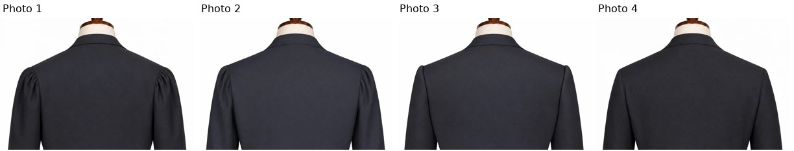
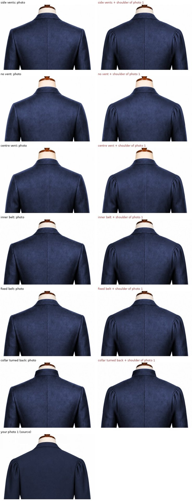
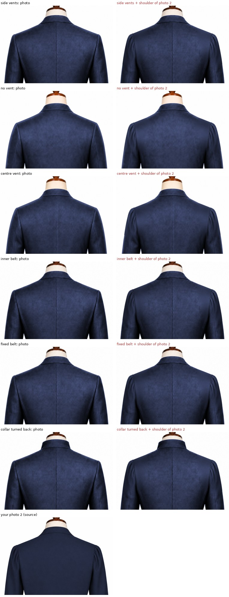
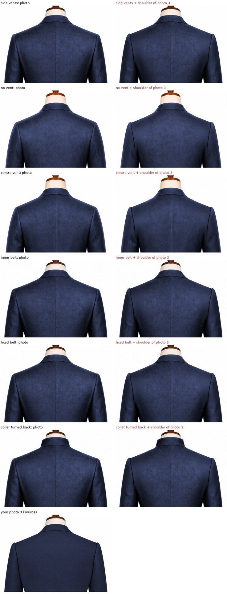
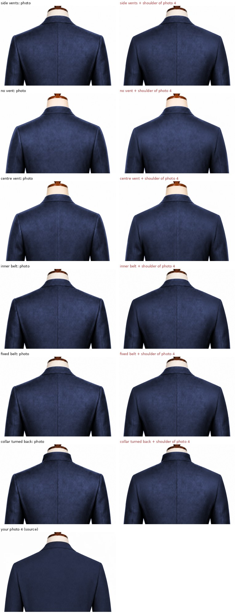

Back view shoulders: review sheets, 23 Nov
Your 4 reference photos, each shoulder laid onto every Back jacket: side vents, no vent, centre vent, inner belt, fixed belt, and collar turned back. On each row the left picture is the Back photo the designer uses now; the right one has your photo's shoulder. The last picture on each sheet is your photo itself. Tap a picture to open it full size.
Your files came without codes in their names, so the photos are numbered in the order they arrived. Please confirm which code each one is (my reading is under each heading).

Photo 1
My reading: gathered, puffed sleevehead: shirt head (E)?

Photo 2
My reading: light shirring: Neapolitan (D)?

Photo 3
My reading: raised, roped sleevehead: Con rollino (C)?

Photo 4
My reading: smooth, close to the standard: Natural (A)?
